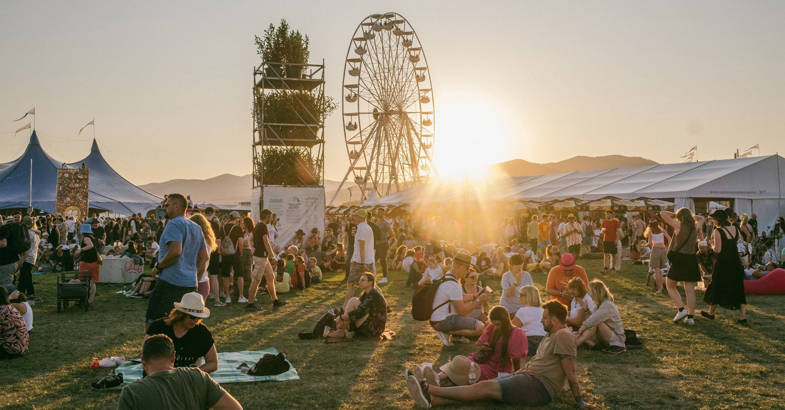

Festivals · Music
Pohoda Festival 2027
- Dates
- –
- Venue
- Trenčín Airport
- Location
- Trenčín, Slovakia
- Format
- In-person
- Category
- Music
- Industry
- Music
- Organiser
- Pohoda Festival
- Price
- Official shop (fetched 24 Nov 2026): 3-day adult ticket for 8–10 July 2027 at Trenčín Airport is currently €169 (camping included); Junior 3-day €119; Kids 6–14 3-day €69. A separately ticketed 4-day adult ticket with Adéla Day (7–10 July 2027) is currently €258, and a standalone Adéla Day ticket for Wednesday 7 July is currently €99; those are not the main 3-day festival product and are not used to set the official start date.
- Official website
- https://www.pohodafestival.sk/en
- Tickets
- https://shop.pohodafestival.sk/en/tickets-2027
About
Official pages re-fetched 24 Nov 2026 publish the main festival on 8–10 July 2027 at Trenčín Airport. A separately ticketed Adéla Day on Wednesday 7 July 2027 is not included in the official 3-day festival window. Dates are local civil dates in Slovakia (Central European Time, UTC+1 / UTC+2 in summer).
Topics: multi-genre, indie.
No organiser attendance figure found on the official pages fetched 24 Nov 2026. Ranked by our estimated size tier 'large' (30,000-100,000 attendees/visits), a judgement from format, venue and scale, not an official number.